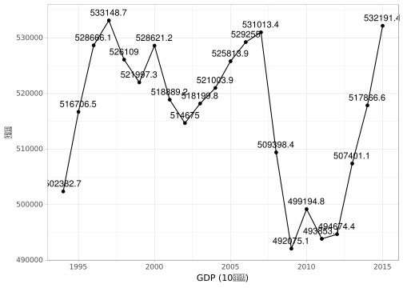

こんにちは
econgit は git，GitHub，R，Python などデータ分析界隈で確固たる地位を固めてきた技術を，経済学教育に取り入れようという試みです。神戸大学経済学研究科の教員有志とTA により試験的に実施されています。あわよくばさらなる広まりを期待しています。
さて，なぜこんなことをしなければいけないのか？
再現性に対する過小評価
プログラムで解決できる仕事はできるだけプログラムにやらせる，というのはよい心がけです。なぜなら，手作業は記録が難しく，レポートの再現可能性を損なってしまうから。例えば，日本の GDP の経年変化をグラフにしたいとしましょう。内閣府のページ から，例えば「国内総生産勘定」という項目をクリックすると次のようなExcelファイルをダウンロードできます。
これに
- 27行目の数字を選択して，
- チャートの適当なボタンをクリック
- 横軸のデータとして，7行目の数字を選ぶ
- グラフを右クリックして保存
という手続きを行なってできたものが，次のグラフです。

実に直感的ですね。しかし，このグラフはそのままでは使えないでしょう。 縦軸に単位が書いてないですし，横軸が少々つまりすぎて見づらいです。 レポートに貼り付けるような場合には，通常もう少し装飾的な要素を追加してから使用すると思います。
ダウンロードから上の図を作るまでの工程は，友人や同僚に指示しても再現できそうですが，次のグラフはどうでしょうか。

私自身がどのように作ったかというと，「手探りでやってみたらなんとなく上手く行ったのでこれを採用しよう」と，軽い気持ちで選んだオプションを使っています。これを再現するのは一筋縄にいきそうにありません。実際にはこのようなグラフが他の人に再現できないとしても問題になることはないのでしょうが，一番の問題は，自分にも再現ができないということです。
次のような経験はないでしょうか。
- 先生に「最新の確報を使ってグラフを作り直しなさい」と言われたけど，自分でもどうやって作ったのか忘れてしまったなあ
- 作り直そうと思ったら何時間もかかってしまった（or うまくいかなかった）
- このデータどこでダウンロードしてきたかなあ？？
そこでプログラミングの出番です。
小さくはじめよう！
プログラミングは，同じ仕事をいつでも同じようにしてくれる強い味方です。
- 同様の図を違うデータで作りたい
- 他人が同じ図を作れるようにドキュメント化したい
といった問題を解決してくれます。Excel でもプログラミング（VBA）をできるのですが，あまり普及していないようなので，思い切って環境を変えましょう。 データ分析と文字列操作が中心になるので，R や Python という扱いやすい言語を使うのがいいでしょう。 データサイエンス界隈では，R と Python を使ってビッグデータ・機械学習・ディープラーニングなどなどという話題が飛び交っています。（詳しくは知りません）。
プログラムはスケールを選びません。したがって，スモールデータに気負いすることもありません。とにかく最初のコードを書きましょう。
さて，先程のような図を描くコードはRでは次のように書くことができます。
# ダウンロードと読み込み
library(readxl)
download.file("http://www.esri.cao.go.jp/jp/sna/data/data_list/kakuhou/files/h27/tables/27a1_jp.xls",
"27a1_jp.xls")
gdp_xls <- read_excel("27a1_jp.xls", sheet = 1, skip = 4)library(tidyverse)
gdp0 <- gdp_xls[c(2, 22), 2:ncol(gdp_xls)]
gdp <-
as_tibble(cbind(t(gdp0))) %>%
transmute(year = V1, gdp = V2)
ggplot(gdp, aes(x = year, y = gdp, label = gdp)) +
geom_line() + geom_point() +
geom_text(vjust = 0, nudge_y = 800) +
xlab("GDP (10億円)") + ylab("年度") +
theme_light(base_family = "IPAGothic")
最後の図は，ここで書かれたコードによる出力です。環境を整えさえすれば，友人や1年後の自分がこの図を再現することも容易なはずです。（パッケージの仕様が大きく変わらない限り，という註釈付きですが・・・・それは Excel を使っていても同じことでしょう）
まとめ
経済学部生に一番に学んで欲しいことはもちろん経済学そのものであってプログラミングではないのですが，それでもプログラミングを学んで欲しいと思うのは，多少のコーディングスキル（特に文字列操作・ファイル操作）を身につけておけば余分な仕事を減らせるケースが沢山あると思うからです。半年後の自分のために，今の作業をコードにして残しましょう。